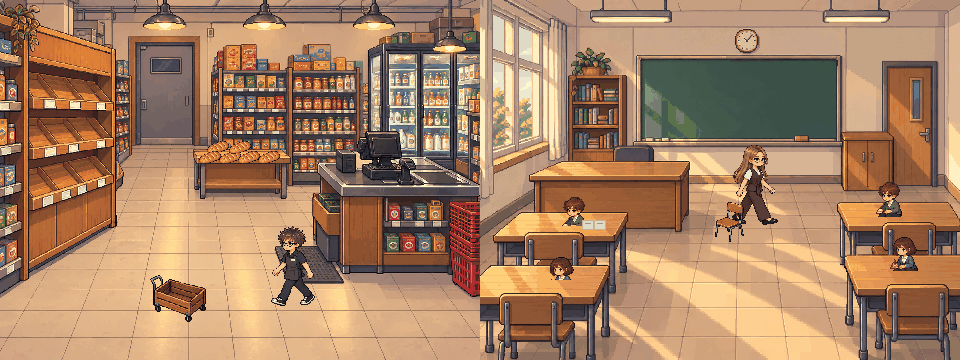

ПЕРВЫЙ ФРАГМЕНТ
Обычный день
Утро Магазин и класс

ВоваМагазин
НастяКласс
Подготавливаем сцены…
Хлеб и доска
Первый фрагментНаблюдайте за двумя пространствами. Действия идут сами.
Прогресс пока не сохраняется. Можно продолжить игру.
Звук сейчас недоступен. Можно продолжить без звука.
Переписка
Первый фрагмент завершён
Утренние сцены магазина и класса